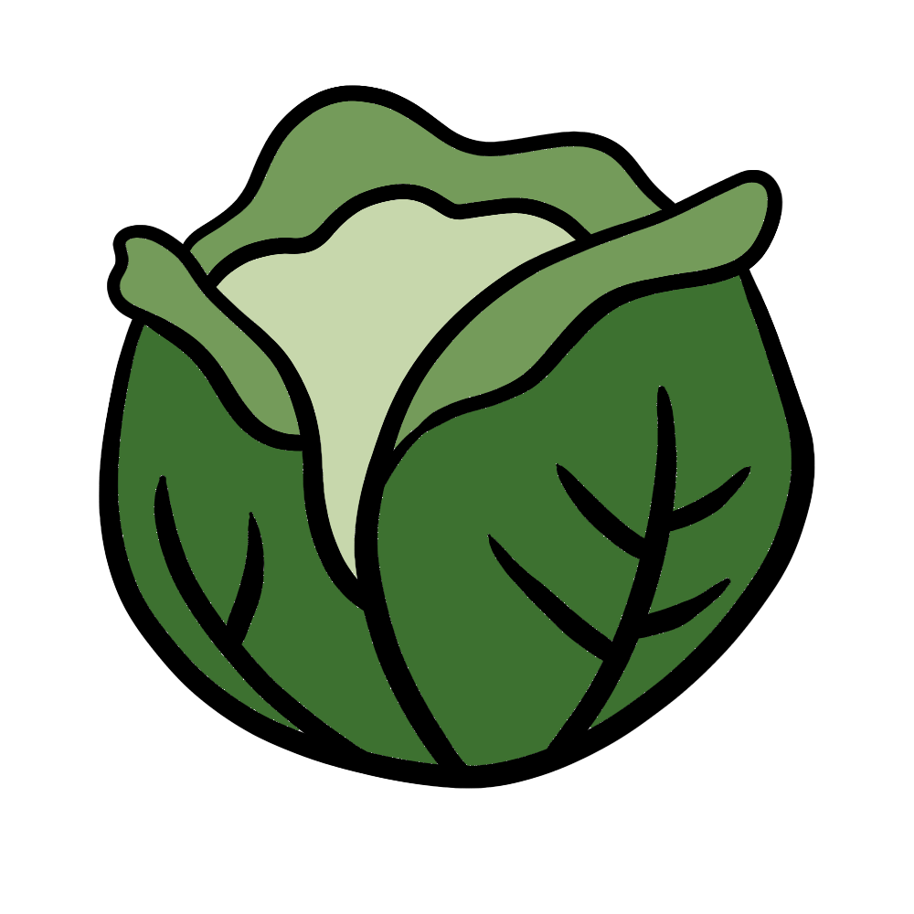

How to grow Cabbage
A Step by step Guide
Cabbage is a nutrient-rich vegetable that thrives in cooler temperatures. It requires a well-prepared garden bed and consistent care to produce firm, healthy heads. Whether you're growing green, red, or Savoy cabbage, follow this guide to cultivate a successful cabbage crop.
Difficulty Rating: Moderate
Best Season to Grow: Spring and Fall
Can Be Grown: Both Indoors and Outdoors
Supplies Needed to Grow Cabbage
Cabbage seeds or seedlings (green, red, or Savoy varieties)
Well-draining, fertile soil
Compost or balanced fertilizer (10-10-10)
Garden trowel
Watering can or hose
Mulch (straw, leaves, or wood chips)
Raised garden bed or deep containers (for small spaces)
Row covers (to protect from pests)
Setting Up Your Cabbage Garden
Choosing the Right Location
Sunlight: Cabbage grows best in full sun, requiring at least 6 hours of direct sunlight per day.
Soil: Use rich, well-draining soil with a pH between 6.5 and 7.5.
Spacing: Plant cabbage 12-24 inches apart in rows spaced 24-36 inches apart to allow room for growth.
Indoor Setup: If growing indoors, use large, deep containers (at least 12 inches deep) with nutrient-rich soil.
Preparing the Soil
Loosen the soil to a depth of at least 12 inches for proper root development.
Mix compost into the soil to enhance fertility.
Avoid planting cabbage in the same spot as previous brassica crops (like broccoli or kale) to prevent disease buildup.
Planting Cabbage
Direct Sowing or Transplanting: Start seeds indoors 6-8 weeks before the last frost or plant seedlings 2-4 weeks before the last frost.
Planting Depth: Sow seeds ¼-½ inch deep and thin seedlings when they develop 2-3 true leaves.
Water Immediately: After planting, water thoroughly to help seedlings establish.
Caring for Your Cabbage Plants

Watering
Keep the soil consistently moist, providing 1-1.5 inches of water per week.
Water at the base of the plant to prevent fungal diseases.

Fertilizing
Apply a balanced fertilizer every 2-3 weeks to promote steady growth.
Avoid excessive nitrogen, which can cause loose, leafy heads.

Mulching & Weed Control
Apply mulch around cabbage plants to retain moisture and suppress weeds.
Hand-pull weeds carefully to avoid disturbing cabbage roots.

Pest and Disease Prevention
Watch for pests such as cabbage loopers, aphids, and flea beetles.
Use floating row covers to protect young plants from pests.
Rotate crops yearly to prevent diseases like clubroot and black rot.

Harvesting
Cabbage is ready to harvest in 70-120 days, depending on the variety.
Harvest when heads are firm and reach their mature size (typically 1-4 lbs).
Cut the head at the base with a sharp knife, leaving some outer leaves for potential regrowth.
By following these steps, you can successfully grow cabbage and enjoy a healthy, homegrown harvest. Happy gardening! 🌱